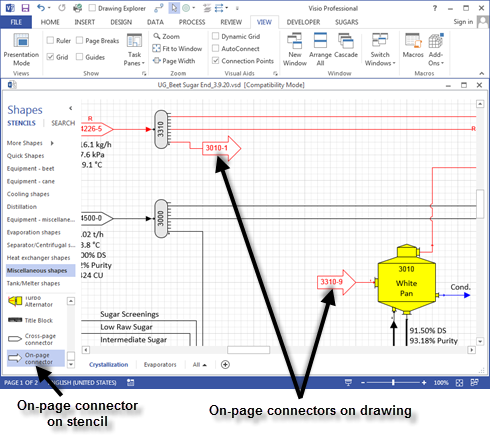
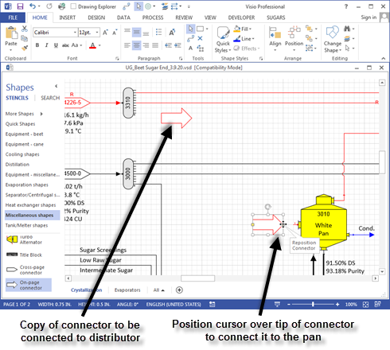
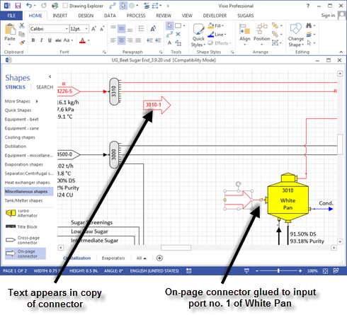
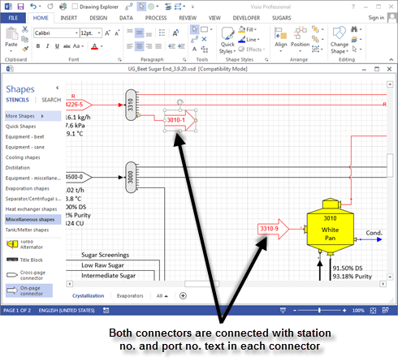

The cross-page and on-page connectors are special shapes that are used to make connections between stations that are on the same page (on-page connector), or on different pages (cross-page connector). Connections between stations are made with cross-page and on-page connectors so that actual connecting lines do not have to be used. Confusion is often caused when all flow streams on a diagram are drawn using the connector tool. The number of flow streamlines can make it difficult to read the diagram. Using on-page connectors, the number of connecting lines can be reduced to give a clearer and cleaner flow diagram. In the diagram shown below, on-page connectors are used to represent one of the outputs from a vapor distributor station to the vapor input line of a pan. In this case, the pan and distributor are on the same page; however, the stations can be on different pages. Double clicking on either of the on-page connector shapes will give an Internal Flow Properties window with the same information (that is, pressure, temperature, quantity, components, color, etc. all will be the same). Thus, both on-page connectors for a flow stream represent the same connecting line.

The text inside the on-page and cross-page connectors represents the station no. and port no. on the destination and origination station for each respective connector. For example, in the window above, the on-page connector from distributor station no. 3310 goes to White Pan station no. 3010, port 1; hence, the text in the on-page connector attached to the distributor is "3010-1". Conversely, the on-page connector into the White Pan station no. 3010 is from distributor station no. 3310 port 9; hence, the text in the on-page connector is "3310-9".
On-page and cross-page connectors behave in exactly the same manner. They are different shapes only to make it easier to locate the corresponding mate when searching for the connections. That is, when looking for the mate to an on-page connector, only the active page is searched; whereas, for a cross-page connector, other pages have to be searched. This makes it easier to locate connections when working with a multi-page model; hence, when designing models, always use on-page connectors for connections on the same page, and cross-page connectors for connections between pages.
To use either connector, drag it from the stencil to the point on the drawing where it is to be connected to either the originating station or the destination station. Then make a copy of the connector by holding down the control key and dragging the copy to the other station (or copy the connector to the Windows clipboard using the copy icon and then paste it from the clipboard on to the drawing near the connecting station). Next, at each connector, place the cursor over the tail, or tip, of the arrow until your cursor changes to four arrows in a cross pattern with the "Reposition connector" tool tip as shown below.

Now hold the left mouse button down and drag the connector from the tip of the arrow and connect it to a connection point on the station. The connection from the on-page connector should glue to the port on the station (see window below for red square at connecting point).

Now, connect the tail of the copied connector to the distributor station no. 3310 using the same method as used for connecting the connector to the White Pan (see window below).

When the connection is completed, text should appear in each arrow that shows the station no. and port no. of the corresponding station. The connection is completed if text appears in the connectors; otherwise, the connection was not made correctly and it should be redone.